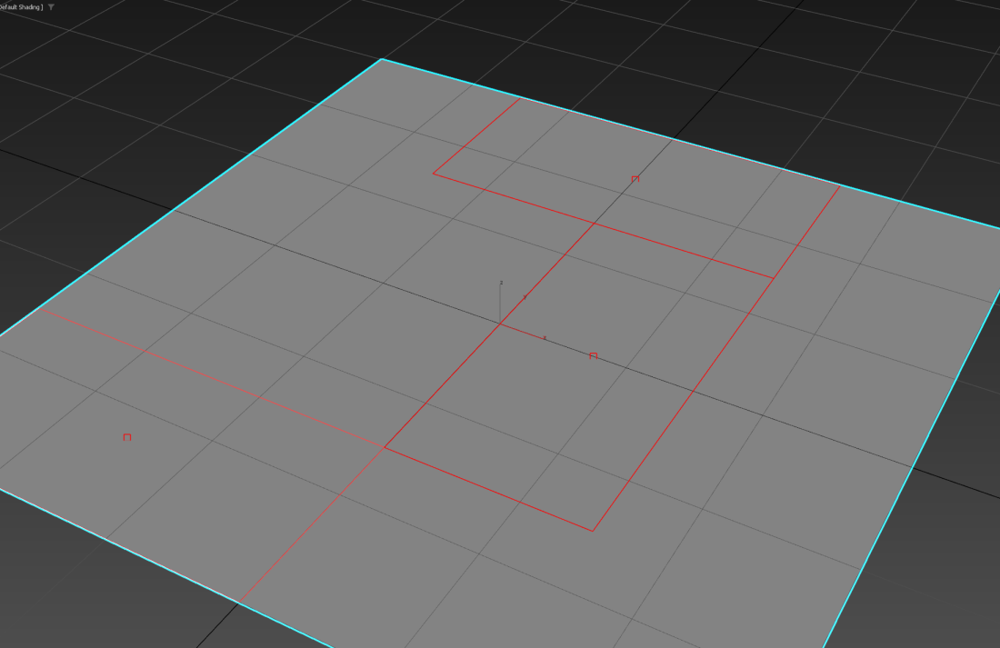
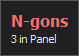

Tools / Check N-gons
Check N-gons
Find every polygon with more than four sides in one click.
What it does
Check N-gons looks at each selected object (Editable Poly, or an Edit Poly on the stack) and finds the polygons with more than 4 sides. It outlines them in red in the viewports for a few seconds, with a small marker at the centre of each so tiny ones show too.

A box at the top of the viewport reports the count per object.

How to use it
- Select one or more objects.
- Right-click and choose Check N-gons in the Scripts part of the menu, right after Rebuild Mesh.
- Read the box. The outlines disappear after a few seconds.
Options
There are no settings.
Good to know
- The box is green when there are none and red when n-gons were found or nothing usable was selected.
- The n-gons are also selected where that changes nothing on screen: on an Editable Poly, and on an Edit Poly only while it is current at polygon level. Otherwise the box says so.
- The screen is left as it was: no switch of panel or sub-object level.
- When nothing is found nothing changes and there is no undo step.